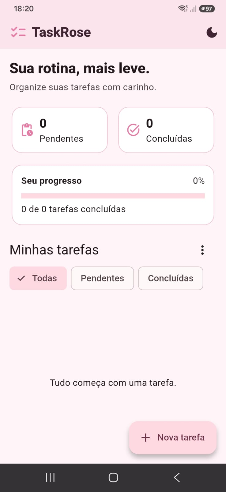
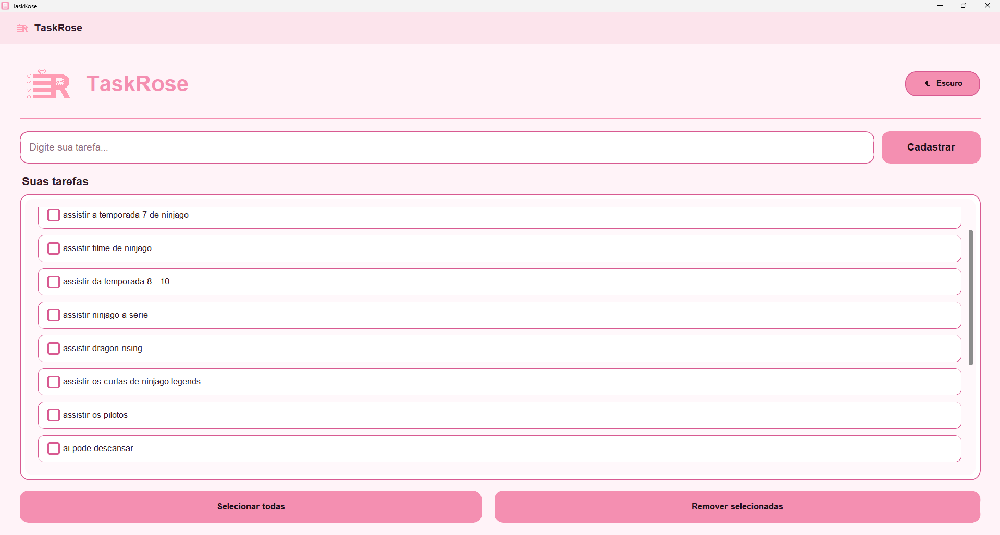

Cadastre tarefas
Adicione as atividades que você precisa realizar e mantenha tudo em um só lugar.
Organize suas tarefas com carinho. Planeje o que precisa fazer, acompanhe suas conquistas e deixe seu dia mais organizado com o TaskRose.

Uma experiência simples para ajudar você a visualizar sua rotina e acompanhar cada conquista.
Adicione as atividades que você precisa realizar e mantenha tudo em um só lugar.
Marque tarefas como concluídas e veja seu progresso ao longo do tempo.
Visualize todas as tarefas, somente as pendentes ou as que já foram concluídas.
Alterne a aparência do aplicativo para escolher o tema que prefere usar.
Selecione tarefas e remova as que não precisa mais manter na lista.
Uma interface em tons de rosa, feita para deixar a organização mais agradável.
Use no computador ou leve sua organização com você no celular.
Sua lista de tarefas em uma tela ampla.

Organização na palma da sua mão.
Selecione seu dispositivo para acessar o download do TaskRose.
Para computadores com Windows. Baixe o pacote da versão desktop.
Instale o aplicativo no seu celular Android usando o arquivo APK.
Os links de download ainda precisam ser adicionados. Veja o arquivo LEIA-ME.txt incluído nesta pasta para configurá-los.